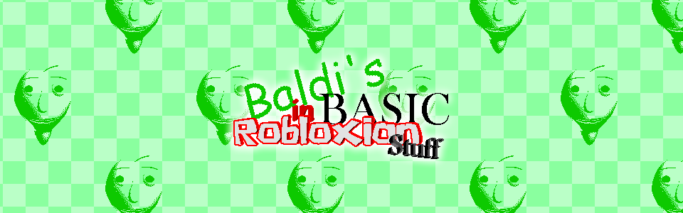
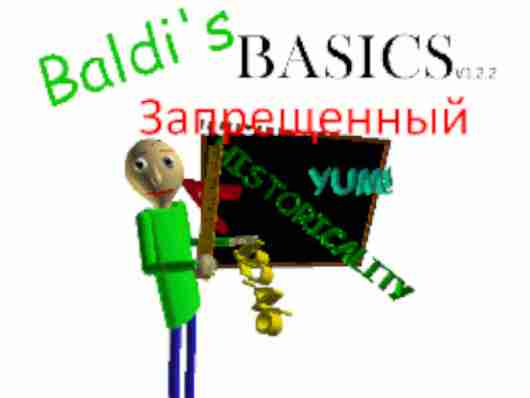
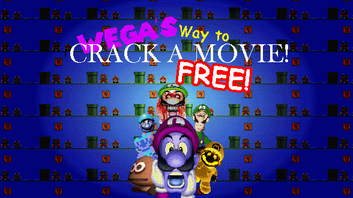
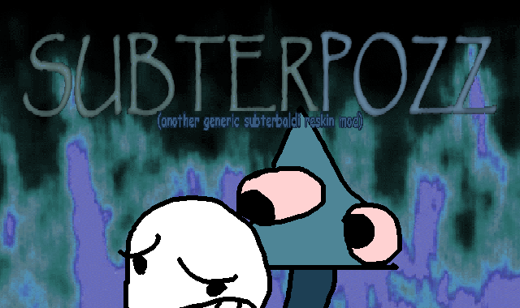
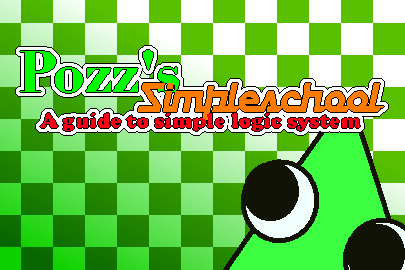
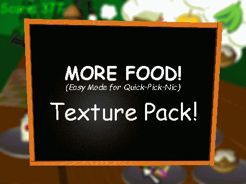
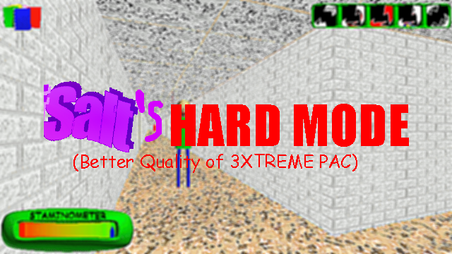
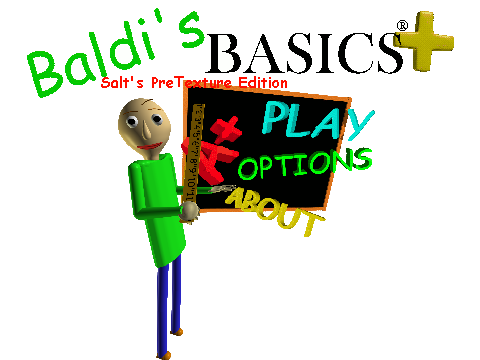
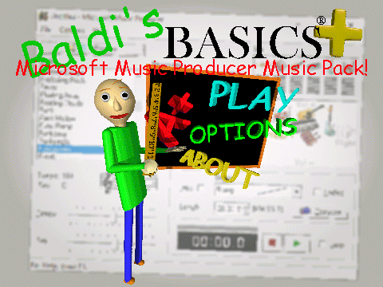

Baldi's Basics
There's two type, Classic and Plus. Currently the Plus section is only Texture pack!
Baldi's BASICS Classic

Baldi's Basics In Robloxian Stuff
Baldi's Basic In Robloxian Stuffs is my first* mod on baldi ever. it aims to create content based on those Roblox's Baldi's Games while adding custom features. Originally used the KOTLIN decompile before switching to PorkyPower decompile.
(there were few attempt of making a mod in private*)
Status: Released & Discontinued (Unmotivation)



Baldi's Basics Forbidden
(Baldi's BASICS Запрещенный)
Baldi's Basics Forbidden (Baldi's BASICS Запрещенный) is my idea of a lost Baldi mod that was made in Russia (I don't speak Russian) and takes inspirations from BASICS, El Pendrive Azul (The Blue Pendrive), and FNAF Ransomware. Mod used the 1.2.2 Version of Classic instead of recent version.
Status: Wrapped Up (Fully Finished)

Wega's Way to CRACK A MOVIE! (FREE!)
LWega's Way to CRACK A MOVIE! (FREE!) is my take on Wega's Challenge in Baldi's Schoolhouse, all character are replaced with luigi-based media (Minus the Bear5) and has a somewhat challenging Hard mode.
Status: Released (Future Update Yet Pending)


SUBTERPOZZ
(another generic subterbaldi reskin mod)
SUBTERPOZZ (another generic subterbaldi reskin mod) is an April fool Subterbaldi Mod which just parodies on subterbaldi clone/reskins while almost having special mechanics. the story is taken places after Pozz's Simpleschool.
Status: Wrapped Up (Fully Finished)

Pozz's Simpleschool
(high mid effort reskin mod)
Pozz's Simpleschool (high mid effort reskin mod) is a planned Baldi mod that would be based on early popular Baldi's mod such as Dave's Fun Algebra Class, Billy's Basic Educational Game, Garrett's Funny Animal Game, and Carl's Dwindling Game.
Status: Planned (Concept Phase)

Baldi's Baldsic In Baldtainment and Balding
Baldi's Baldsic In Baldtainment and Balding is a planned Baldi mod where you can pick a Baldi variant from hardest to joke variant, you'll been given ability to deal with them.
(NULL is not included*)
Status: Planned (Concept Phase)
Baldi's BASICS +
Custom Asset Pack

(0.9+) More FOOD!
(Easy Mode For Quick-Pick-Nic)
More Food is a mini texture pack that Changes the most of pizzas and hot dogs from Quick-Pick-Nic Minigame with "custom" sprites. (which few of them from Lots O' Items.)

(0.9) Salt's Hard Mode
Salt's Hard Mode is a texture pack which is a high effort version of 3XTREME PAC which attempt to make the game harder by making item slot obscure, most doors being Classroom door, and etc.

(0.10) Salt's Pretexture Edition
Salt's PreTexture Edition is a texture pack which is my take to replicate and use older or placeholder graphic over the finalized assets.
This texture pack doesn't try to aim anything to revert most the content to be old, as this texture pack just aims to replicate the old style of pre-plus, if you want to get actually old asset, recommended to use RE-MASTER Texture pack

Microsoft Music Producer Music Pack
Salt's Microsoft Music Producer Pack basically give 3 generated musics each, including Field Trip Minigame and it's Tutorial Music and Lights Out Music.
(Playtime's Theme and Tutorial Theme doesn't get one)